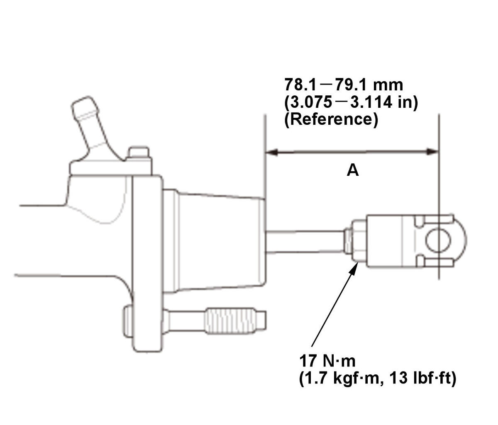

Clutch Pedal and Clutch Pedal Position Switch Adjustment (Except K20C1 (M/T)): Adjustment
NOTE:
- If there is no clearance between the master cylinder piston and the push rod, the release bearing will be held against the diaphragm spring, which can result in clutch slippage or other clutch problems.
- Before adjusting the clutch pedal and the clutch pedal position switch, check the clutch pedal and the clutch master cylinder are installed correctly and not damaged.
- Clutch Pedal, Clutch Pedal Adjusting Bolt, and Clutch Pedal Position Switch A - Adjust
1. Loosen the clutch pedal adjusting bolt locknut (A), and back off the clutch pedal adjusting bolt (B) until it no longer touches the clutch pedal (C). 2. Pull the clutch pedal by hand, then turn in the clutch pedal adjusting bolt until it contacts the clutch pedal.
3. Turn in the clutch pedal adjusting bolt an additional 3/4 to 1 turn.
4. Make sure the clutch pedal height did not change.
5. While holding clutch pedal adjusting bolt tighten the locknut.
6. Pull back the carpet. 7. Measure the clutch pedal height (A) from right side middle of the clutch pedal cover (B) to the floor on the tab (C) without the insulation.
8. Measure the clutch pedal disengagement height (D) from right side middle of the clutch pedal cover to the floor on the tab without the insulation.
(D) Clutch Pedal Disengagement Height (Reference): Without clutch pedal pad cover 115.3-133.5 mm (4.539-5.256 in) With clutch pedal pad cover 117.2-135.4 mm (4.614-5.331 in) (A) Clutch Pedal Height (Reference): Without clutch pedal pad cover 213.5 mm (8.405 in) With clutch pedal pad cover 215.4 mm (8.480 in) 9. Measure the clutch pedal stroke (A). - If the clutch pedal stroke is not within the standard, go to step 10.
- If the clutch pedal stroke is within the standard, go to step 13.
(A) Clutch Pedal Stroke Standard: 125-135 mm (4.92-5.31 in) (B) Clutch Pedal Free Play (Reference): 4.8-19.0 mm (0.189-0.748 in) 
Courtesy of HONDA, U.S.A., INC.10. Remove the clutch pedal assembly .
11. Inspect the length (A) of the clutch master cylinder push rod to the figure as shown.NOTE: If the clutch master cylinder push rod was adjusted, go to step 1.
13. Connect the HDS to the data link connector (DLC) 14. Loosen the clutch pedal position switch A locknut (B).
15. Fully press the clutch pedal to the floor, then release the clutch pedal 10-15 mm (0.39-0.59 in) and hold it there.
NOTE: Measure the clutch pedal height from middle of the clutch pedal cover (C).
16. Check CLUTCH PEDAL POSITION SWITCH A in the PGM-FI DATA LIST with the HDS.
17. Adjust clutch pedal position switch A when the HDS screen indicates CLOSE/OPEN.
NOTE: Be careful not to twist the wire.
18. While holding clutch pedal position switch A, tighten the locknut.
19. Check that the clutch pedal does not contact to the clutch pedal position switch A body when fully pressing the clutch pedal to the floor.
20. Check the clutch operation.
21. Check the clutch interlock operation.
- All Removed Parts - Install
1. Install the parts in the reverse order of removal.